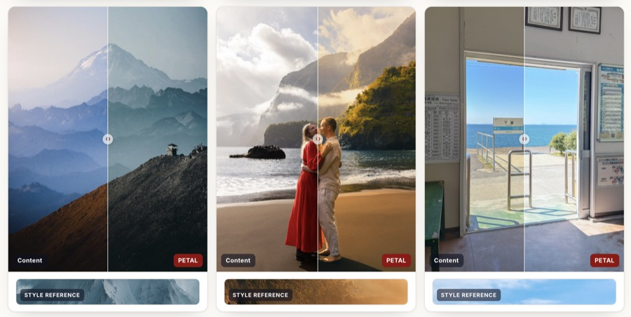

Enlightening Photographic Style Transfer with a Self-Supervised Photographic Embedding
In Proceedings of European Conference on Computer Vision (ECCV), 2026.
[Project]
@inproceedings{zhu2026photographic,
title = {Enlightening Photographic Style Transfer with a Self-Supervised Photographic Embedding},
author = {Zhu, Chengxuan and Fang, Jiacong and Weng, Shuchen and Lyu, Youwei and Tang, Jiajun and Fan, Qingnan and Xu, Chao and Shi, Boxin},
booktitle = {Proceedings of the European Conference on Computer Vision},
year = {2026}
}